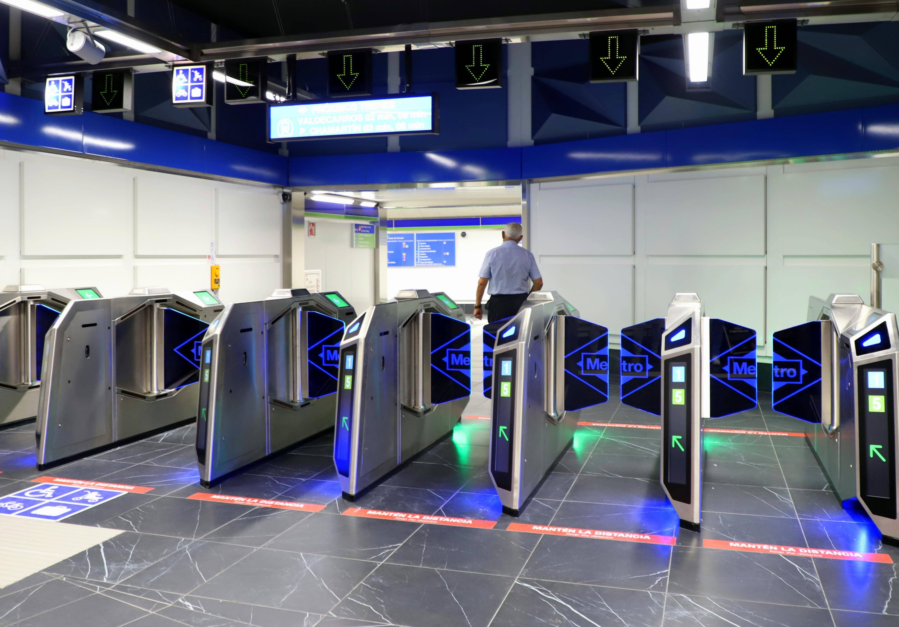

Understanding Source Code
Coding Your Own Object Detection Program
In this step of the tutorial, we'll walk through the creation of the previous example for realtime object detection on a live camera feed in only 10 lines of Python code. The program will load the detection network with the detectNet object, capture video frames and process them, and then render the detected objects to the display.
For your convenience and reference, the completed source is available in the python/examples/my-detection.py file of the repo, but the guide below will act like they reside in the user's home directory or in an arbitrary directory of your choosing.
Here's a quick preview of the Python code we'll be walking through:
import jetson.inference
import jetson.utils
net = jetson.inference.detectNet("ssd-mobilenet-v2", threshold=0.5)
camera = jetson.utils.videoSource("csi://0") # '/dev/video0' for V4L2
display = jetson.utils.videoOutput("display://0") # 'my_video.mp4' for file
while display.IsStreaming():
img = camera.Capture()
detections = net.Detect(img)
display.Render(img)
display.SetStatus("Object Detection | Network {:.0f} FPS".format(net.GetNetworkFPS()))
There's also a video screencast of this coding tutorial available on YouTube:

Source Code
Importing Modules
At the top of the source file, we'll import the Python modules that we're going to use in the script. Add import statements to load the jetson.inference and jetson.utils modules used for object detection and camera capture.
import jetson.inference
import jetson.utils
Loading the Detection Model
Next use the following line to create a detectNet object instance that loads the 91-class SSD-Mobilenet-v2 model:
# load the object detection model
net = jetson.inference.detectNet("ssd-mobilenet-v2", threshold=0.5)
Note that you can change the model string to one of the values from this table to load a different detection model. We also set the detection threshold here to the default of 0.5 for illustrative purposes - you can tweak it later if needed.
Opening the Camera Stream
To connect to the camera device for streaming, we'll create an instance of the videoSource object:
camera = jetson.utils.videoSource("csi://0") # '/dev/video0' for V4L2
The string passed to videoSource() can actually be any valid resource URI, whether it be a camera, video file, or network stream.
Display Loop
Next, we'll create a video output interface with the videoOutput object and create a main loop that will run until the user exits:
display = jetson.utils.videoOutput("display://0") # 'my_video.mp4' for file
while display.IsStreaming():
# main loop will go here
Camera Capture
The first thing that happens in the main loop is to capture the next video frame from the camera. camera.Capture() will wait until the next frame has been sent from the camera and loaded into GPU memory.
img = camera.Capture()
The returned image will be a jetson.utils.cudaImage object that contains attributes like width, height, and pixel format:
<jetson.utils.cudaImage>
.ptr # memory address (not typically used)
.size # size in bytes
.shape # (height,width,channels) tuple
.width # width in pixels
.height # height in pixels
.channels # number of color channels
.format # format string
.mapped # true if ZeroCopy
Detecting Objects
Next the detection network processes the image with the net.Detect() function. It takes in the image from camera.Capture() and returns a list of detections:
detections = net.Detect(img)
This function will also automatically overlay the detection results on top of the input image.
If you want, you can add a print(detections) statement here, and the coordinates, confidence, and class info will be printed out to the terminal for each detection result. Also see the detectNet documentation for info about the different members of the Detection structures that are returned for accessing them directly in a custom application.
Detection = <type 'jetson.inference.detectNet.Detection'>
Object Detection Result
----------------------------------------------------------------------
Data descriptors defined here:
Area
Area of bounding box
Bottom
Bottom bounding box coordinate
Center
Center (x,y) coordinate of bounding box
ClassID
Class index of the detected object
Confidence
Confidence value of the detected object
Height
Height of bounding box
Instance
Instance index of the detected object
Left
Left bounding box coordinate
Right
Right bounding box coordinate
Top
Top bounding box coordinate
Width
Width of bounding box
Rendering
Finally we'll visualize the results with OpenGL and update the title of the window to display the current peformance:
display.Render(img)
display.SetStatus("Object Detection | Network {:.0f} FPS".format(net.GetNetworkFPS()))
The Render() function will automatically flip the backbuffer and present the image on-screen.
Source Listing
That's it! For completness, here's the full source of the Python script that we just created:
import jetson.inference
import jetson.utils
net = jetson.inference.detectNet("ssd-mobilenet-v2", threshold=0.5)
camera = jetson.utils.videoSource("csi://0") # '/dev/video0' for V4L2
display = jetson.utils.videoOutput("display://0") # 'my_video.mp4' for file
while display.IsStreaming():
img = camera.Capture()
detections = net.Detect(img)
display.Render(img)
display.SetStatus("Object Detection | Network {:.0f} FPS".format(net.GetNetworkFPS()))
Note that this version assumes you are using a MIPI CSI camera.
Running the Program
To run the application we just coded, simply launch it from a terminal with the Python interpreter:
$ python3 my-detection.py
Assignment
Important aspects to take into account
- The file
my-detection.pylocated in the path/jetson-inference/python/examplesis always reset when the container is started. For this reason it should be copied to a durable Jetson-Nano file system zone.datadirectory is not reset, so this path could be one of the candidate. - The invocation
detections = net.Detect(img)create a tensor indetections. Information of each 'detection' could be consulted (see the section Detecting Objects). - So, you can access to ClassID, Confidence, Instance, Left, Right, Bottom, Top values
- In the last assignment accuracy and inference times were evaluated choosing different models.
Assignment1
Modify the code my-detection.py so that, the bounding boxes and identifiers associated with each object are displayed for each frame on the console
Please send a message to the professor as soon as you finished

Assignment 2: system that counts people crossing the entry or exit like in the photo
Modify the code my-detection.py so that, design and implement a solution to monitor the crossing of people in the direction of entry and exit at an entrance to a venue. Thus, a camera located perpendicular to the entrance to the enclosure will be assumed, so that the people who access it will enter the scene through one of the ends and leave through the opposite. The people who leave the enclosure will run through the image in the opposite direction. The system is requested to store the number of people who have entered and left the premises, as well as the moment in which they have done so.